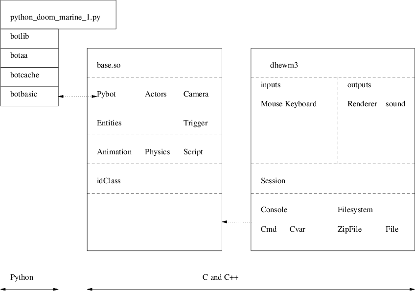
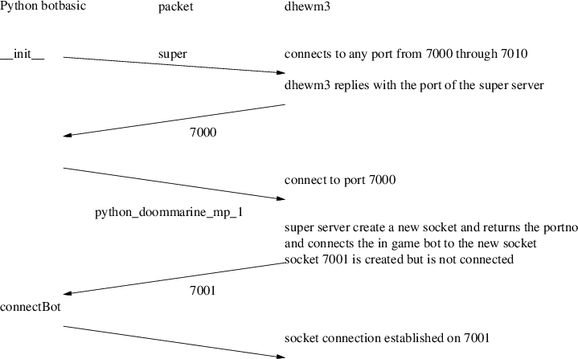

Index
1. Implementing the Pybot API
-

- all assets in doom3 are in
text format
- the remote procedure call marshalling is also achieved
using text format
- conventionally
remote procedure call marshalling is achieved by sending raw
binary format
- please read Tanenbaum’s
description of how remote procedure calls operate
- and how marshalling is employed and
why it is necessary
- Andrew Tanenbaum, Modern
Operating Systems, Prentice-Hall International
- sections 10.3, 10.3.1, 10.3.2
- text format is slightly less efficient than raw binary
encoding
- but it is much easier to
debug and extend
- suspect the efficiency loss is
minimal
- the difference in format means
the packet size increases
- however the number of packets
sent will remain the same
- caveat, this has not
been measured and could be wrong!
- however during the
development of the bot API the simplicity of text based
remote procedure calls cannot be overstated
-
Sandpit/git-doom3/pybot-dhewm3/python-bot/python_doommarine_1.py
#!/usr/bin/env python
import botbasic, time
b = botbasic.bot ("localhost", "python_doommarine_1")
print "success! python doom marine is alive"
print "trying to get my id...",
me = b.me ()
print "yes"
print "the python marine id is", me
-
botbasic.bot creates an object which
connects to the dhewm3 game engine
-
b.me() returns an integer which is
the id of the bot player
2. class basic __init__
- purpose is to
connect to the dhewm3 engine
-
ultimately it will connect and have a dedicated socket for
this bot player into the engine
- another bot player will
have a different socket
- the dhewm3 engine needs
to connect the new bot player socket with the in game bot
- the in game bot is created via
pen2map
3. In game bot creation
Sandpit/chisel/maps/python.txt
define 1 room 1
define 2 room 2
define 3 room 3
define s worldspawn
define i light
define M monster python_doommarine_mp
###########################################
# 1 i i i i# 2 # 3 #
#i # # #
# s . # #
# . . #
# # . #
# M # . #
# # . #
# i i i i # # #
###########################################
the keywords
monster python_doommarine_mp are
used to inform pen2map to generate
an entity (id) for the in game bot
Sandpit/chisel/python/tiny.map
// entity 2
{
"classname" "python_doommarine_mp"
"name" "python_doommarine_mp_1"
"anim" "idle"
"origin" "-600 -456 96"
"ambush" "1"
}
we can see the return value
for me will be 2
4. super server
- the roll of
the super server in the dhewm3 python extensions is to:
- create a new socket for every new
python connection
- assign the new socket into the
appropriate in game player entity
5. class basic __init__

this
connection sequence allows for the dhewm3 game to be
restarted quickly after a crash - the
super server port may differ, as the underlying operating
system may hold onto the previous sockets for a while
(minutes)
since the botbasic always queries the
port number of the super server (and all sockets above 7000
to 7010) understand the super
request this will be transparent after
__init__ has completed the python
botbasic has a direct connection to a socket which is owned
by the in game player entity if the super server does
not know about the requested python bot name then the port
number returned will be 0 - in which
case __init__ queries for the super
server value and it loops back to the start
this
allows for the python script to be started before the game
engine - and even allows a previous
dhewm3 to be running, then it terminates and a new dhem3
engine to be run and the python bot will eventually connect
to the latest dhewm3 engine
6. me
Sandpit/git-doom3/pybot-dhewm3/python-bot/botbasic.py
#
# me - return the id of this bot.
#
def me (self):
self.s.send ("self\n")
return int (self.getLine ())
7. dhewm3 engine: bot api changes
- the file
Sandpit/git-doom3/pybot-dhewm3/neo/game/ai/pybot.cpp
contains the dhewm3 side api implementation
- also read the
file
Sandpit/git-doom3/pybot-dhewm3/neo/game/ai/pybot.h
8. dhewm3 engine: implementation of me
Sandpit/git-doom3/pybot-dhewm3/neo/game/ai/pybot.cpp
/*
* interpretRemoteProcedureCall - a switch statement of all rpc commands.
*/
void pyBotClass::interpretRemoteProcedureCall (char *data)
{
if (protocol_debugging)
gameLocal.Printf ("rpc (%s)\n", data);
if (strcmp (data, "super") == 0)
rpcSuper ();
else if (idStr::Cmpn (data, "getpos ", 7) == 0) // Id’s strncmp equivalent
rpcGetPos (&data[7]);
else if (strcmp (data, "self") == 0)
rpcSelf ();
etc
Sandpit/git-doom3/pybot-dhewm3/neo/game/ai/pybot.cpp
/*
* rpcSelf - return our id.
*/
void pyBotClass::rpcSelf (void)
{
char buf[1024];
if (protocol_debugging)
gameLocal.Printf ("rpcSelf called by python\n");
idStr::snPrintf (buf, sizeof (buf), "%d\n", myid);
if (protocol_debugging)
gameLocal.Printf ("rpcSelf responding with: %s\n", buf);
buffer.pyput (buf);
state = toWrite;
}
9. pybot.h
- declares
pyBufferClass ,
pyBotClass ,
pyServerClass registerName and
populateDictionary
10. pyBotClass
Sandpit/git-doom3/pybot-dhewm3/neo/game/ai/pybot.h
int myid;
char *name;
int portNo;
bool enabled;
pyBufferClass buffer;
serverState state;
struct sockaddr_in sa;
struct sockaddr_in isa;
int socketFd;
int connectFd;
bool connected;
11. Tutorial: adding pybot access to health
- start
emacs and press F9 and then F2
- this loads in
pybot.cpp and then splits the screen
- open up file pybot.h
which is in the same directory as
pybot.cpp
- now open up
Sandpit/git-doom3/pybot-dhewm3/python-bot/botbasic.py
12. Adding health method to botbasic.py
- search for the
method definition for me
- now
add
Sandpit/git-doom3/pybot-dhewm3/python-bot/botbasic.py
#
# me - return the id of this bot.
#
def me (self):
self.s.send ("self\n")
return int (self.getLine ())
#
# health - return the bots health
#
def health (self):
self.s.send ("health\n")
return int (self.getLine ())
the string
health indicates the remote
procedure (method) that we want to call notice that
health will return an integer to the
python application we need to add the game engine code,
so change to the pybot.cpp buffer
(press F9) search for the method
pyBotClass::interpretRemoteProcedureCall
- and add the following code
Sandpit/git-doom3/pybot-dhewm3/neo/game/ai/pybot.cpp
else if (strcmp (data, "self") == 0)
rpcSelf ();
else if (strcmp (data, "health") == 0)
rpcHealth ();
the method
pyBotClass::interpretRemoteProcedureCall
interprets all the api calls and is akin to a long
switch statement search for the
implementation of rpcSelf and underneath it place the
following
Sandpit/git-doom3/pybot-dhewm3/neo/game/ai/pybot.cpp
/*
* rpcHealth - return our health.
*/
void pyBotClass::rpcHealth (void)
{
char buf[1024];
if (protocol_debugging)
gameLocal.Printf ("rpcHealth called by python\n");
idStr::snPrintf (buf, sizeof (buf), "%d\n", dictionary->health (myid));
if (protocol_debugging)
gameLocal.Printf ("rpcHealth responding with: %s\n", buf);
buffer.pyput (buf);
state = toWrite;
}
notice the call to
dictionary->health()
- the remaining code convert the integer
into a string and passes it back to the python library
navigate to the method
dict::ammo , underneath add the
following code
/*
* health - return the health for the bot.
*/
int dict::health (int id)
{
return entry[id]->health ();
}
we need to add a dictionary
entry for health in the class dict
int reload_weapon (int id);
int ammo (int id);
int health (int id);
bool aim (int id, int enemy);
int turn (int id, int angle, int angle_vel);
now we need a
health method in
item , so firstly add the
declaration in class item
int stop_firing (void);
int ammo (void);
int health (void);
void reload_weapon (void);
underneath
item::ammo add
/*
* health - return the health of a python bot or monster.
*/
int item::health (void)
{
switch (kind)
{
case item_monster:
assert (false);
return 0; // ignore
case item_player:
return idplayer->health;
}
}
add the method declaration to
pybot.h
Sandpit/git-doom3/pybot-dhewm3/neo/game/ai/pybot.h
void rpcSuper (void);
void rpcGetPos (char *data);
void rpcSelf (void);
void rpcHealth (void);
void rpcMaxObj (void);
void rpcStep (char *data);
void rpcRight (char *data);
13. Homework
- write down a
list of classes defined in pybot.h
and pybot.cpp give a summary of
their purposes
- examine the purpose of
dict and
item
Index
1. Implementing the Pybot API
2. class basic __init__
3. In game bot creation
4. super server
5. class basic __init__
6. me
7. dhewm3 engine: bot api changes
8. dhewm3 engine: implementation of me
9. pybot.h
10. pyBotClass
11. Tutorial: adding pybot access to health
12. Adding health method to botbasic.py
13. Homework
Index
This document was
produced using
groff-1.22.